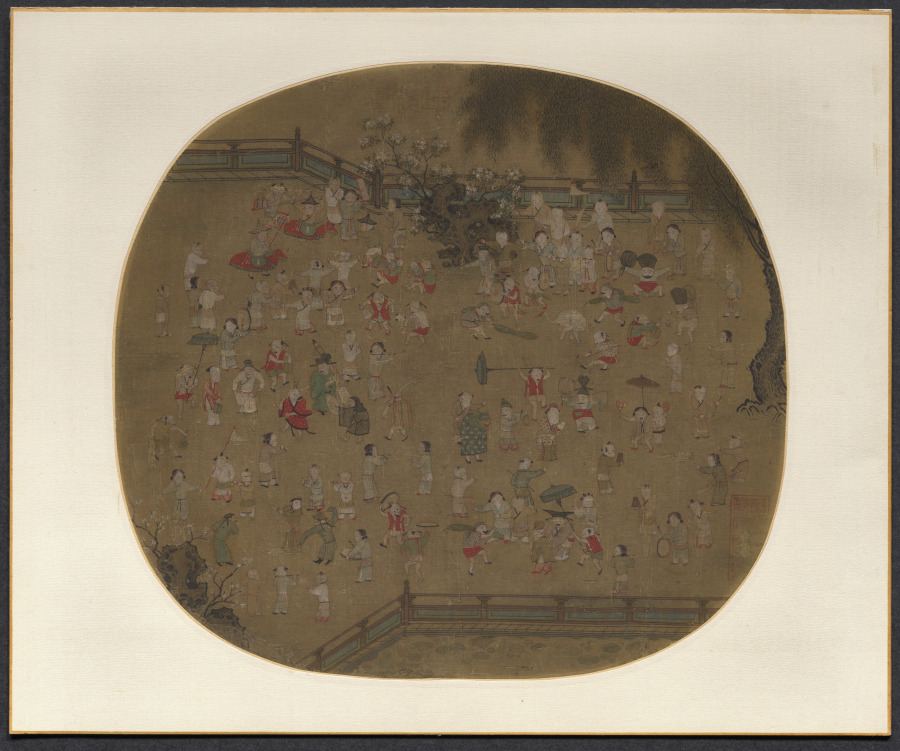
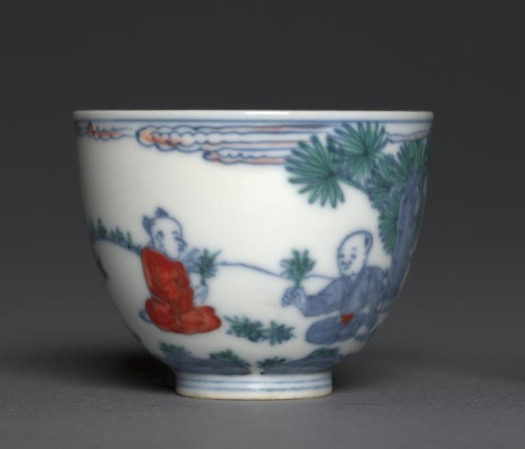
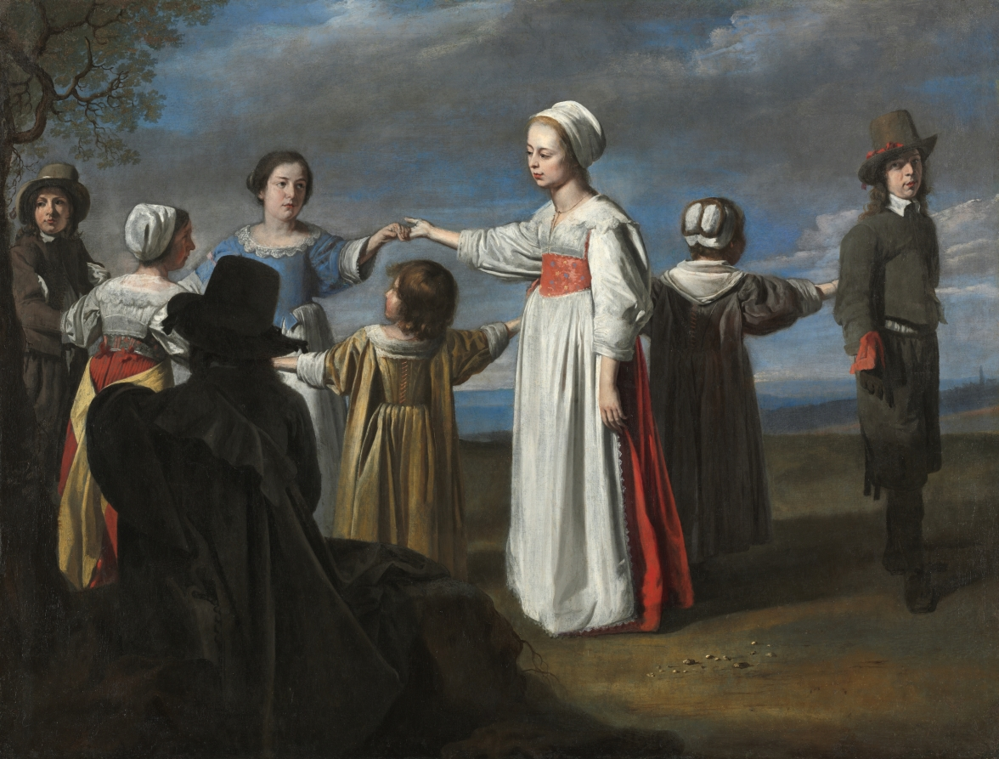
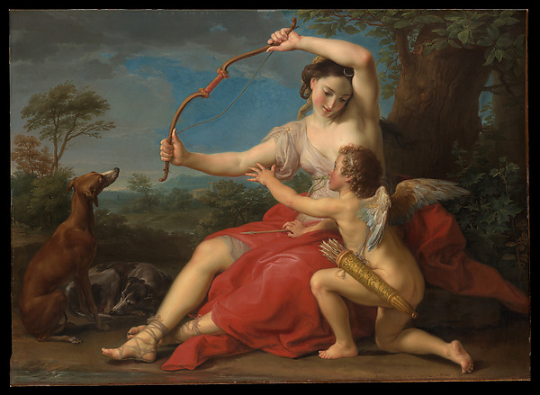

page from the small-people notebook · do not throw out
children know something we forgot
re-opened 2am
play, rhymes, toys & the seriousness of being small
i started this page because of one porcelain cup and then i could not stop. it's
all the same thing — a kid spinning a top in 1100, a kid skipping rope in spain,
a kid scaring off a navy. they take it so seriously. we're the ones who forgot it was serious.

a hundred kids, all busy, none of them performing
Su Hanchen (Chinese, active c. 1101–1125) · One Hundred Children at Play, 1100s–1200s · Album leaf; ink and color on silk · Cleveland Museum of Art · CC0
i counted maybe forty before i gave up. every single one in their own little world. (it's almost dizzying — like a handful of grain thrown across silk.)
↑ look how nobody's looking at us. that's the whole secret i think.

the cup that started all of this
Unknown, 1465–87 · Porcelain, underglaze blue + overglaze enamel, docai ("joined colors") ware · Cleveland Museum of Art
two kids painted among chrysanthemums with SO much care they look about to move. somebody balanced precision against joy on a thing you'd drink tea out of. who does that. (people who remembered, that's who.)
↘ and then there's this — a girl with her arms thrown wide pulling the whole dance toward her:

arms wide. world incoming.
Le Nain (French) · Children Dancing · c. 1650, oil on canvas · Cleveland Museum of Art
everyone's in those dark honest clothes, holding hands in a circle, and there's real joy here — the kind that doesn't need anything fancy at all.
ok the pictures are one thing but the old poems 200-year-old poems about being a kid
wreck me even harder. keeping a few here so i don't lose them.
The Little Cripple's Complaint
From my chamber-window high,
Lifted to my easy-chair,
I the village-green can spy,
Once I used to frolic there,
March, or beat my new-bought drum;
Happy times! no more to come.
— Ann Taylor · PoetryDB
watching the world you used to run through, now from a window. she doesn't make it melodramatic. just the simple aching fact of a child left behind while the village keeps dancing. i had to sit with this one.
(the village keeps dancing → that line, man.)
Christmas Holidays
Six weeks elapse, and down the Woodford way
A heavy coach drags six more heavy souls,
But no glad urchins shout, no trumpets bray,
The carriage makes a halt, the gate-bell tolls,
And little boys walk in as dull and mum
As six new scholars to the Deaf and Dumb!
— Thomas Hood · PoetryDB
the exact moment kids come back to school and their whole bodies go quiet and heavy. "dull and mum." everyone who lived through going back knows that feeling in their bones.
If one of them happens to have something nice…
If one of them happens to have something nice,
Directly she offers her sister a slice;
And never, like some greedy children, would try
To eat in a corner with nobody by!
Whatever occurs, in their work or their play,
They are willing to yield, and give up their own way.
— Jane Taylor · The Good-Natured Girls · PoetryDB, public domain
not the grand gesture — the sister offering a slice without hiding. ordinary and perfect. the way kindness actually works when it's real.
On my Sister Joanna's Entrance into Her 33rd Year
In them renew'd, you'll live and live again,
And children's children's children lisp thy name.
— Major Henry Livingston, Jr. · PoetryDB
you become immortal not through monuments but through the mouths of the people who come after. a person echoing on, just by being loved.
tender & apocalyptic at once —
Head of a White Woman Winking
When Lily winks they understand everything,
right down to the particle
of a butterfly's wing lodged
in her last good eye,
so the situation is avoided,
the potential for a cataclysm
is narrowly averted,
and the bumblebee lugs
its little bundle of shaved nerves
forward, on a mission
from some sick, young godhead.
— Edward Taylor · PoetryDB
a wink holding back disaster, a bumblebee carrying fragility like it's the weight of the world. "a bundle of shaved nerves" doing its impossible work. children's logic, exactly.
saving the loud stuff for last. first a rope-skipping rhyme that is pure nonsense and scans
perfectly for jumping —
found · traditional spanish children's rhyme
A la lata al latero
A la lata al latero
A la hija del chocolatero
A la lima al limón
A la hija de Don Simón
Que viva la lata
Que viva el latero
Que viva la hija del chocolatero
Que viva la lima
Que viva el limón
Que viva la hija de Don Simón
long live the tin man, long live the chocolate-maker's daughter — kids chanting glorious nonsense that times their jumps the exact same way it has for a hundred years. nobody decided it should last. it just did.
try saying it out loud. your feet already know the rhythm. ✦
"Rebecca and Abigail Bates, daughters of keeper Simeon Bates, famously played fife and drum to scare off British soldiers during the War of 1812, earning them the nickname
'The American Army of Two.'"
two lighthouse keeper's daughters picked up their instruments and turned a song into an act of courage. you can almost hear that drum carrying across the water. kids. just KIDS.
(an army of two. i found this at 2am and just sat there.)

a bow made of ribbon. a laughing cupid.
Pompeo Batoni · Diana and Cupid · 1761, oil on canvas · The Metropolitan Museum of Art · Open Access
even the gods, when they play, look like this — like you stumbled into a garden where the rules don't quite apply.